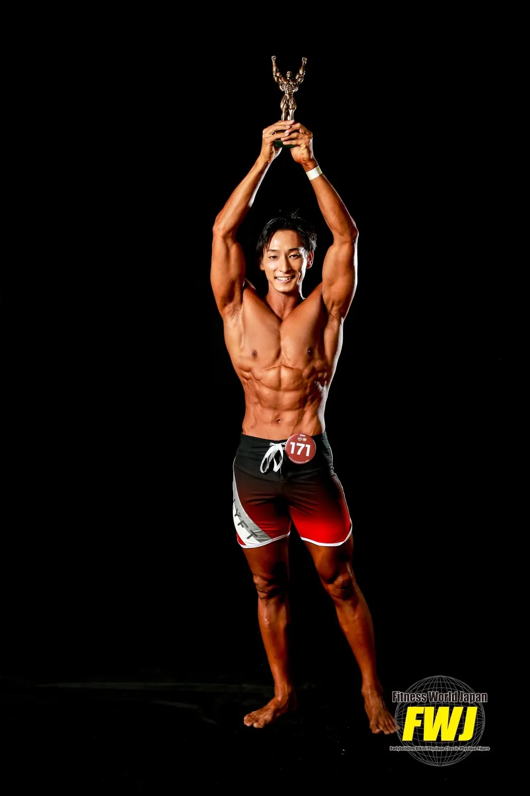
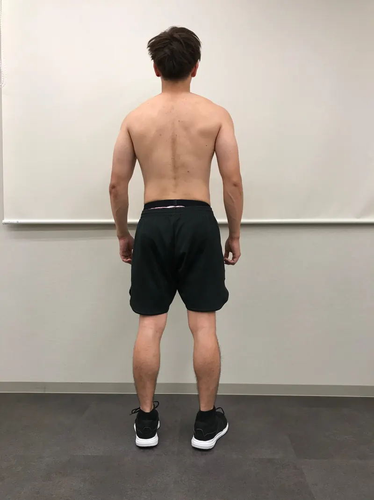
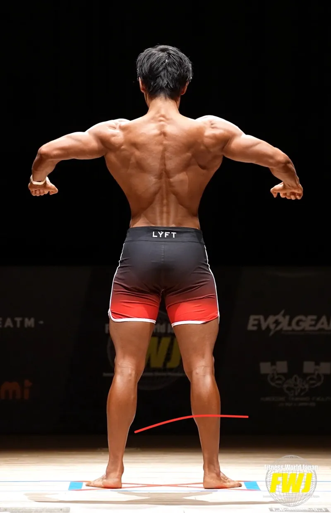
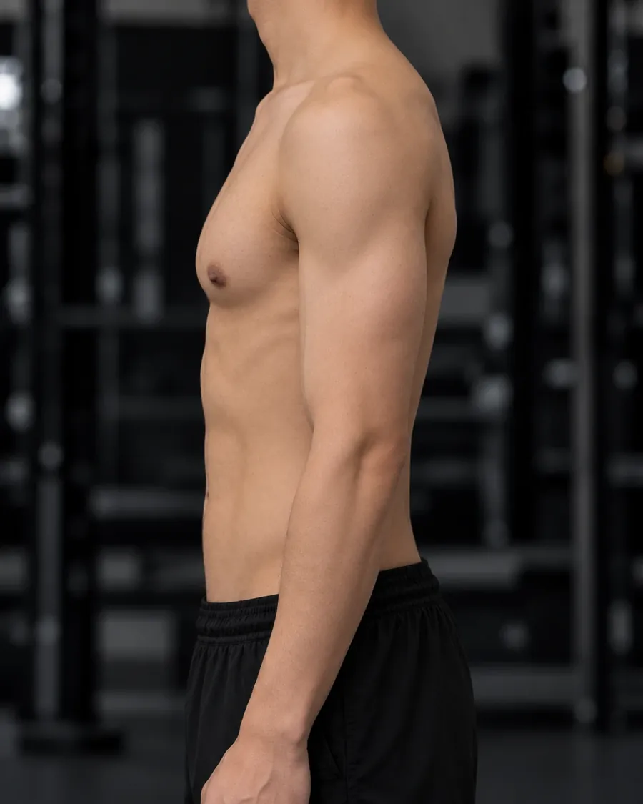
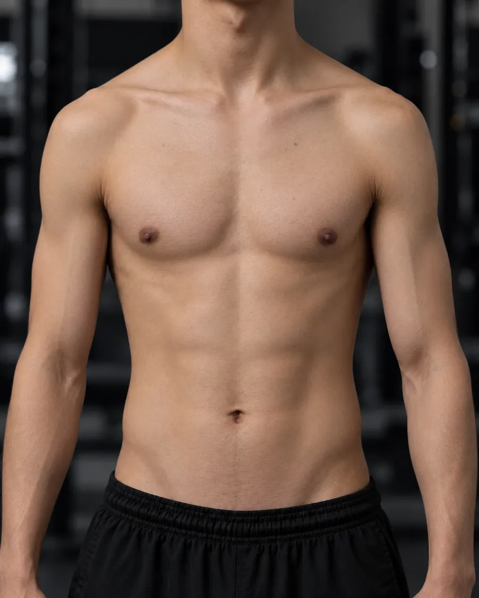
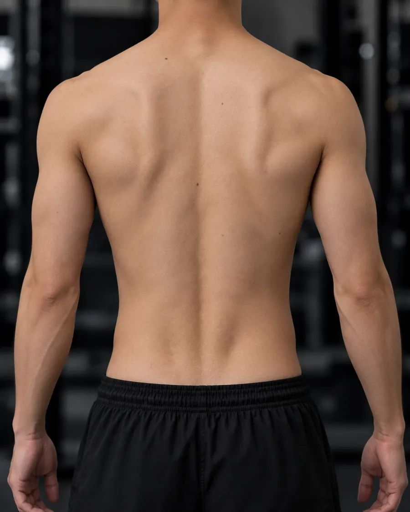
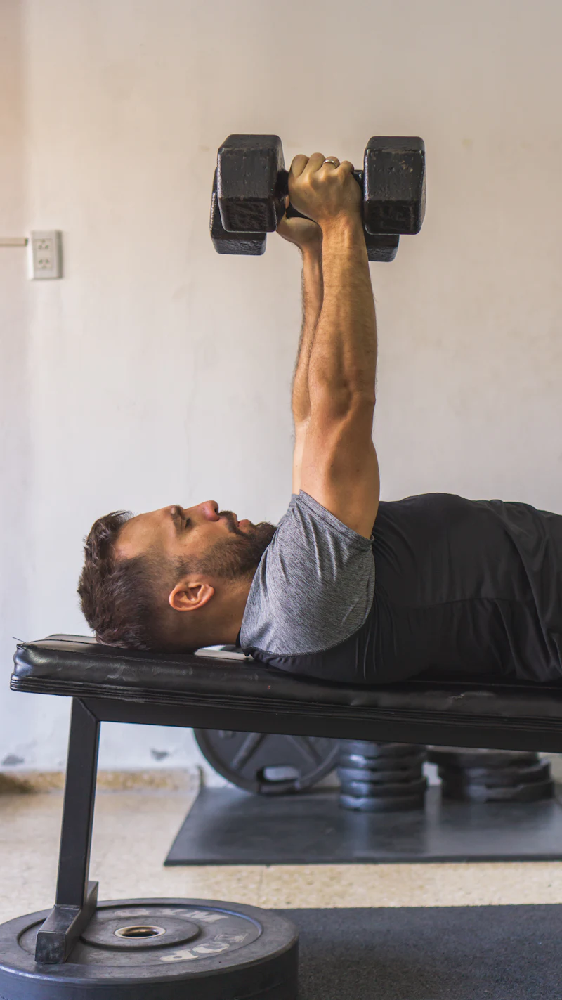
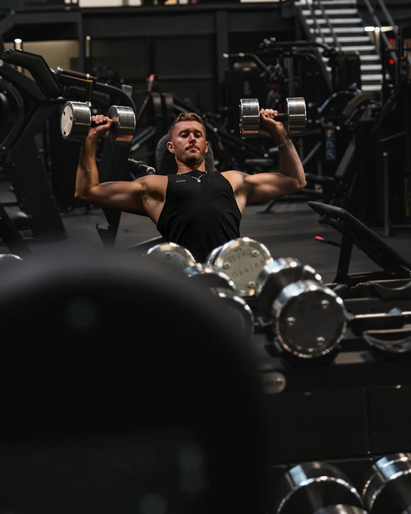
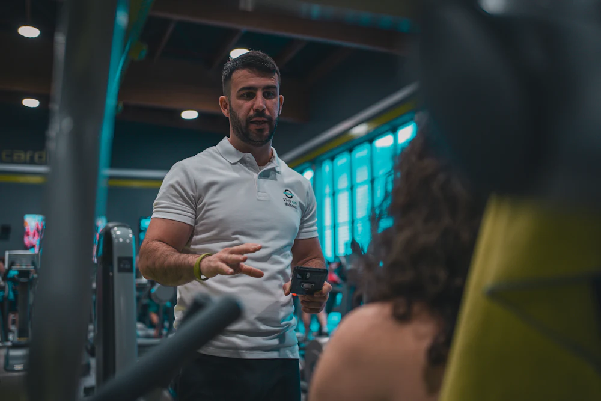
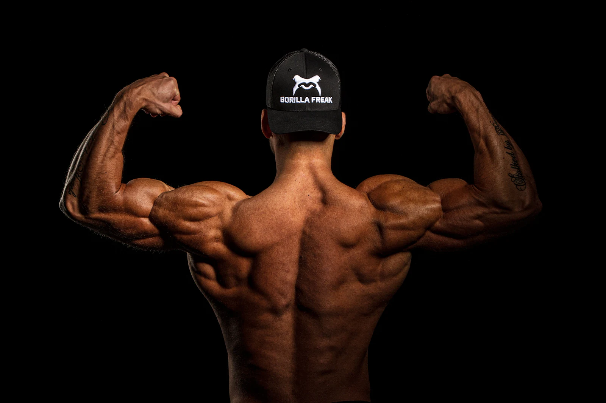

PHYSIQUE / BODYBUILDINGコンテストで勝つための
弱点は
伸びしろだ
伸び悩む部位を、高野トレーナーが
オンラインで見直します。
LINEで受付・相談無料（予定）
背中は、ここまで変わる。

BEFORE
AFTER※個人の結果であり、変化には個人差があります。
サンプル表示・実績未確認
- 指導人数
- XX名
- 大会入賞者
- XX名
- 指導歴
- XX年
- 身体変化の事例
- XX件
その部位、
次の大会まで
放置しますか？
-

イメージ写真SHOULDER肩が大きくならない
-

イメージ写真UPPER CHEST胸の上部が発達しない
-

イメージ写真BACK背中が成長しない
- 左右差がある
- 重量は伸びたのに見た目が変わらない
- 大会で弱点を痛感した
努力不足ではなく、
やり方のズレかもしれない。
量を増やす前に、3つの視点でズレを探します。
- 01
BODY｜写真
部位ごとの差を見る
同じ角度・同じ条件で撮った写真で、どこがどれだけ足りないかを確認。
- 02
MOTION｜動画
狙った筋肉に効いているか
重量は扱えていても、別の部位が仕事をしていないか。
- 03
PLAN｜記録
種目・量・頻度・回復
メニューの組み方や、減量期の進め方まで含めて見直す。
指導イメージ（架空の例）
CASE胸上部が
育たない
フィジーク選手の場合
-
01
今の身体を確認する
正面・斜め・側面を同じ条件で撮影。鎖骨の下にボリュームが足りず、胸の中部〜下部に比べて上部が平らに見える。
イメージ写真 -
02
トレーニング動画を確認する
胸の日の動画を見ると、フラットのプレスが中心。肩がすくみ、上部に負荷が乗りにくい動きになっている。

肩がすくむ- 0:03下ろす位置がみぞおち寄り
- 0:07肩がすくむ
イメージ写真 -
03
種目・フォーム・負荷・頻度を検討する
変える要素を4つに分けて、優先順位をつける。
0°フラット 
30°インクライン 見直す4つの要素（例） 今 見直し案 種目 フラット中心 インクラインを先頭に フォーム 肩がすくむ 肩甲骨を下げて固定 負荷 高重量・低回数のみ 中重量8〜12回も追加 頻度 胸は週1回 上部を週2回に分散 -
04
個別プログラムを提案する
今のジム・今の分割に合わせて、変えるところだけを差し込む。
PROGRAMDAY A｜胸・肩例種目 セット×回数 メモ インクラインDBプレス 3×8–10 NEW・最初に ベンチプレス 3×6–8 重量は維持 ローインクラインフライ 2×12–15 NEW サイドレイズ 4×12–15 — -
05
進捗を確認し、修正する
重量・回数と写真を並べて確認。伸びが止まったら、理由を確かめてから組み替える。
インクラインDBプレス｜トップセット（kg）数値は例
4〜6週目で止まっているので、来週から順番を入れ替えて、ボリュームを少し落としましょう。
画面越しでも、
フォームまで見る。
- 同じ条件で撮る写真の角度・時間帯をそろえて比べる
- いつものジムのまま普段のメニューを動画で共有
- 手元に残るアドバイスとプログラムはテキストで
01
次の大会に向けた、
ひとつの改善計画
90DAYS
改善プログラム仮プラン
今日のインクラインの動画です。上部に効いている感じが弱いです。
肘が開きすぎて、肩の前側に逃げています。脇を少し締めて、下ろす位置を鎖骨寄りに。
次のセットで試します！
どこから変えるべきか、まずは話してみませんか。
弱点部位について相談する
高野 [名]Mintea's パーソナルトレーナー
- トレーニング歴
- XX年
- コンテスト出場
- XX大会
- 主な成績
- [ 確認済みの成績のみ ]
- 得意分野
- [ 例：肩・背中の発達 ]
数値はサンプル表示・実績未確認
[ 高野トレーナー本人の言葉で、自身が悩んだ部位の経験と、競技者へのメッセージを記入してください。 ]
指導方針
- 見てから組む写真と動画で今を確認してから、メニューを決める。
- 一度に変えすぎない何が効いたか分かるよう、変える要素を絞る。
- 記録で判断する感覚だけでなく、重量・回数・写真で振り返る。
プラン
どれが合うか分からなくても、相談の中でご提案します。
-
[ プラン名 ]
¥[ 料金 ]税込
- 期間
- [ ]
- 内容
- [ ]
- フィードバック
- [ ]
- 対応方法
- [ ]
-
90 DAYS仮プラン
¥[ 料金 ]税込
- 期間
- 90日（仮）
- 内容
- [ ]
- フィードバック
- [ ]
- 対応方法
- [ ]
-
[ プラン名 ]
¥[ 料金 ]税込
- 期間
- [ ]
- 内容
- [ ]
- フィードバック
- [ ]
- 対応方法
- [ ]
よくある質問
大会出場経験がなくても受講できますか？
主な対象は大会出場者ですが、次の大会を目標にしている方もご相談ください。
自宅のトレーニング環境でも受講できますか？
器具や環境を伺い、可能な範囲でプログラムを調整します。部位によって必要な器具があるため、事前にご相談ください。
どの部位が弱点か分からなくても相談できますか？
はい。身体の写真や大会での評価をもとに、優先して取り組む部位を一緒に整理します。
フォームの確認はどのように行いますか？
トレーニング中の動画を送っていただき、それをもとにフィードバックします。撮影の角度もご案内します。
減量中でも指導を受けられますか？
[ 減量期の対応可否と、食事面のサポート範囲を記載 ]
指導期間はどのくらいですか？
[ プランごとの指導期間を記載 ]
どの競技カテゴリーに対応していますか？
[ 例：メンズフィジーク、ボディビル、クラシックフィジーク など ]

次の大会も、
同じ弱点を抱えたまま
出場しますか？
今の身体を客観的に見直し、
次のステージで何を変えるか。
一緒に考えましょう。
- 01LINEで相談
- 02ヒアリング
- 03プログラム開始
気になる部位と、次に出る大会を送ってください。